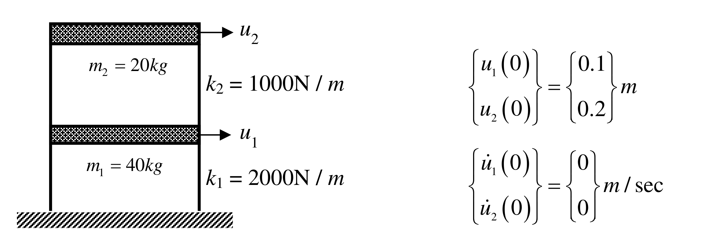
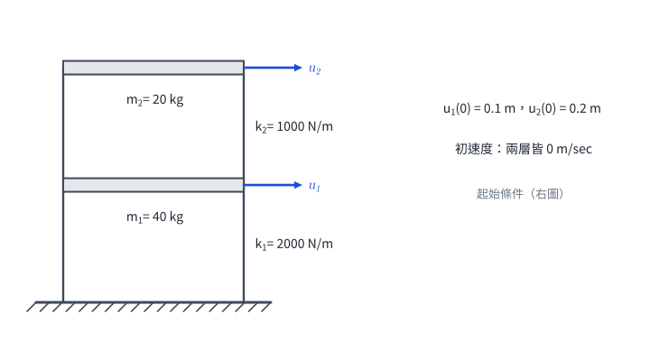
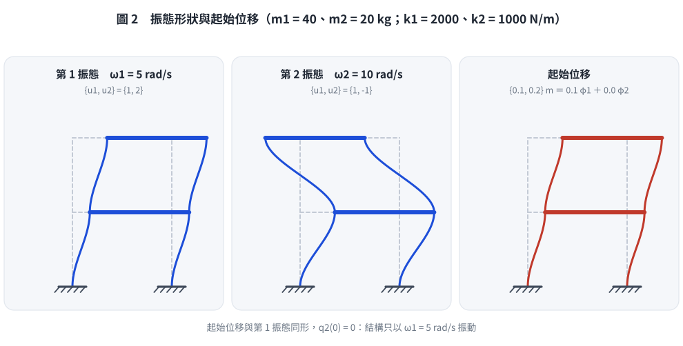

📄 題目正本：考卷原文・附圖・判讀清單（已確認）
SD-2019-2 題目正本
本檔只記錄考卷上寫了什麼、圖上畫了什麼，不含任何解法。解析見同資料夾
SD-2019-2.md。
判讀清單經使用者確認前，狀態為「待確認」；確認後本檔原則上不再修改（改動須回考卷原圖並記 log）。
| 項目 | 內容 |
|---|---|
| 考卷 | raw/exams/SD-2019_結構動力分析與耐震設計.pdf，第 1 頁（頁次 2－1），第二題 |
| 考年 | 2019（民國108年）專技高考結構工程技師「結構動力分析與耐震設計」 |
| 配分 | 25 分（㈠ 3 分、㈡ 6 分、㈢ 16 分） |
| 附圖 | SD-2019-2-fig-1.png（舊擷取，右上方空白處有滑鼠游標）、SD-2019-2-fig-2.png（2026-11-15 由考卷 500 dpi 重擷取） |
| 判讀狀態 | 已確認（2026-11-15 使用者授權依 Claude 建議確認。原轉錄：2026-11-15 轉錄；PyMuPDF 110 dpi 整頁＋450–500 dpi 局部放大，PDF 文字層核對原文；盲讀於開啟解析前完成） |
1. 考卷原文（逐字）
二、有一棟兩層樓剪力屋架，如下之左圖所示，試回答以下問題：
㈠求出運動方程式。（3 分）
㈡求出振動頻率及所對應之振態。（6 分）
㈢當此剪力屋架受到如下右圖所示之起始條件，其位移反應為何？請用時間的函數表示。（16 分）
2. 考卷給的公式、附表與參數
- 考卷沒有給參考公式。
- 給定（左圖）：$m_1=40\,kg$、$m_2=20\,kg$、$k_1=2000\ \mathrm{N/m}$、$k_2=1000\ \mathrm{N/m}$。
- 給定（右圖，起始條件）：$\begin{Bmatrix}u_1(0)\\u_2(0)\end{Bmatrix}=\begin{Bmatrix}0.1\\0.2\end{Bmatrix}m$，$\begin{Bmatrix}\dot u_1(0)\\\dot u_2(0)\end{Bmatrix}=\begin{Bmatrix}0\\0\end{Bmatrix}m/\sec$。
- 考卷沒有給：阻尼（未提及）、外力（自由振動）、振態正規化方式、樓高。
- 卷首注意事項：㈠可以使用電子計算器。㈡不必抄題，作答時請將試題題號及答案依照順序寫在試卷上，於本試題上作答者，不予計分。㈢本科目除專門名詞或數理公式外，應使用本國文字作答。考試時間：2 小時。
3. 附圖

證據圖 SD-2019-2-fig-2.png（500 dpi 重擷取；舊圖 SD-2019-2-fig-1.png 內容相同，右上方有游標）
圖面文字照錄：u2、m2 = 20kg、k2 = 1000N / m、u1、m1 = 40kg、k1 = 2000N / m；{u1(0); u2(0)} = {0.1; 0.2} m；{u̇1(0); u̇2(0)} = {0; 0} m / sec
4. 判讀清單
| # | 項目 | 判讀 | 圖上／題文依據 | 把握 |
|---|---|---|---|---|
| 1 | 質量、勁度位置 | 下層（一樓）$m_1=40$ kg、層勁度 $k_1=2000$ N/m；上層 $m_2=20$ kg、$k_2=1000$ N/m | 左圖標示位置 | 確定 |
| 2 | 自由度 | $u_1$ 二樓樓版、$u_2$ 屋頂，水平向右 | 左圖箭頭 | 確定 |
| 3 | 剪力屋架 | 樓版剛性、只平移；$k_1$、$k_2$ 為整層側向勁度 | 題文「剪力屋架」；k 只標一次 | 確定（解讀） |
| 4 | 起始條件單位 | 「m」為公尺（位移 0.1、0.2 m；速度 m/sec） | 右圖 | 確定 |
| 5 | 阻尼 | 考卷未提，視為無阻尼自由振動 | 題文 | 確定（解讀） |
| 6 | 所求 | ㈠ 運動方程式；㈡ 兩個頻率與振態；㈢ $u_1(t)$、$u_2(t)$ | 題文 | 確定 |
| 7 | 考卷沒有給 | 阻尼、外力、振態正規化方式、樓高 | 題文 | 確定 |
轉錄：2026-11-15（SD-U1-3 題目正本推廣・批 3）
確認：2026-11-15 使用者授權依 Claude 建議確認（SD-U1-3 題目正本推廣・批 3，關卡一）
考題編號：SD-2019-2
主分類： SD-U1-3 單自由度、多自由度系統之動態分析及應用
副分類： SD-U1-2 運動方程式推導
分析方法： 雙層剪力屋架動力分析 (2-DOF Shear Building Dynamics)
標籤： 剪力屋架 MDOF 運動方程式 特徵方程式 自然頻率 振態 自由振動 初始條件 純模態反應
1. 題目（考卷原文見題目正本）
考卷原文、公式／附表、附圖與判讀清單（已確認）見
SD-2019-2-problem.md。本節只列解題時最容易讀錯的地方與本解使用的記號；題意以題目正本為準。

重繪自考卷附圖，依題目正本判讀清單；本圖攔下的判讀錯誤：下層質量、勁度較大；起始位移 0.2 m 在屋頂。
常見誤讀
| 項目 | 正確判讀 | 常見誤讀 |
|---|---|---|
| 質量勁度位置 | 下層 $m_1=40$ kg、$k_1=2000$ N/m，上層 $m_2=20$ kg、$k_2=1000$ N/m（判讀 #1） | 上下對調 |
| 起始條件 | $u_1(0)=0.1$ m、$u_2(0)=0.2$ m，初速 0（判讀 #4） | 把位移向量當成振態 |
| 阻尼 | 考卷未提，無阻尼自由振動（判讀 #5） | — |
本解記號： $u_1$、$u_2$ 為二樓、屋頂側移（m）；$q_n(t)$ 為振態座標。
2. 考題核心精神與出題者意圖 (Core Concepts & Examiner's Intent)
核心觀念：
- 剪力屋架模型： 將多層建築簡化為僅有水平自由度的多自由度 (MDOF) 系統，樓板視為剛性，柱僅提供側向勁度。
- 特徵值分析： 建立質量矩陣與勁度矩陣，透過解特徵方程式求得系統的自然頻率與對應的振態。
- 模態疊加法與自由振動： 系統的總反應為各模態反應的線性組合。對於無阻尼系統的自由振動，由初始位移與初始速度決定各模態的參與係數。
出題者測驗能力：
- 寫出剪力屋架標準的質量與勁度矩陣。
- 準確計算特徵方程式的根。
- 敏銳的觀察力： 測驗考生是否能發現給定的初始位移恰好與第一振態完全成比例，從而大幅簡化自由振動的求解過程（純模態反應）。
3. 解題戰略地圖與陷阱分析 (Strategic Roadmap & Trap Analysis)
戰略地圖：
- 建立運動方程式： 根據剪力屋架公式 $M\ddot{U} + KU = 0$ 寫出對應矩陣。
- 求解特徵值問題： 解 $\det(K - \omega^2 M) = 0$，求得 $\omega_1, \omega_2$。
- 求解振態： 將 $\omega^2$ 代回 $(K - \omega^2 M)\phi = 0$ 求得 $\phi_1, \phi_2$。
- 求解自由振動反應： 將初始位移與初始速度代入反應通式 $U(t) = \sum_{i=1}^2 (A_i \cos\omega_i t + B_i \sin\omega_i t)\phi_i$。觀察發現 $B_i = 0$，且初始位移剛好與 $\phi_1$ 成正比，故 $A_2 = 0$。
四大陷阱：
| # | 陷阱 | 正確處理 |
|---|---|---|
| 1 | 勁度矩陣組裝錯誤 | 剪力屋架 $K_{11} = k_1 + k_2 = 3000$，切勿只寫 $2000$。 |
| 2 | 計算特徵方程式出錯 | 將行列式展開時容易算錯係數，建議提早約分，例如行列式方程式兩邊同除以 $m_1 \times m_2$。 |
| 3 | 盲目使用公式計算模態參與係數 | 可以直接使用代數聯立方程式求解 $A_1, A_2$，若看出初始條件即為第一振態，可直接寫出結果，省去大量計算。 |
| 4 | 忽略初速條件 | 題目給定初速為零，因此正弦項的係數 $B_i = 0$。 |
3.5 變數層次分析（Variable Hierarchy Analysis）
複習提示：第一次解題後，在每個卡住的知識點旁標記
⚠；第二次複習時只看有⚠的項目。
最終目標
求出剪力屋架之自然頻率、振態，並寫出隨時間變化之自由振動位移函數 U(t)
本題關鍵公式（依計算順序）
$\boxed{\cdot}$ = 需由前步驟推導，非題目直接給定的變數
$$\text{Step 1: } \det\!\left(\boxed{K} - \omega^2 \boxed{M}\right) = 0$$
$$\text{Step 2: } \!\left(\boxed{K} - \boxed{\omega_i}^2 \boxed{M}\right) \boxed{\phi_i} = 0$$
$$\text{Step 3: } U(t) = \sum_{i} \boxed{A_i} \cos(\boxed{\omega_i} t) \boxed{\phi_i}$$
L1：題目直接給定
看到題目就能讀出的數字，不需要任何公式。
| 符號 | 數值 | 說明 |
|---|---|---|
| $m_1, m_2$ | $40, 20$ kg | 各樓層質量 |
| $k_1, k_2$ | $2000, 1000$ N/m | 各樓層層間勁度 |
| $U(0)$ | $\{0.1, 0.2\}^T$ m | 初始位移 |
| $\dot{U}(0)$ | $\{0, 0\}^T$ m/sec | 初始速度 |
L2：需知識點推導
需要知道公式名稱與適用條件，套入 L1 即可算出。
Step 1：運動方程式組裝
| 符號 | 公式/來源 | 卡關? |
|---|---|---|
| $K$ | $\begin{bmatrix} k_1+k_2 & -k_2 \\ -k_2 & k_2 \end{bmatrix} = \begin{bmatrix} 3000 & -1000 \\ -1000 & 1000 \end{bmatrix}$ | |
| $M$ | $\begin{bmatrix} m_1 & 0 \\ 0 & m_2 \end{bmatrix} = \begin{bmatrix} 40 & 0 \\ 0 & 20 \end{bmatrix}$ |
Step 2：特徵值與初始條件求解
| 符號 | 公式/來源 | 卡關? |
|---|---|---|
| $\omega_i, \phi_i$ | 特徵方程式解 | |
| $A_i$ | $U(0) = A_1\phi_1 + A_2\phi_2$ |
L3：深層知識（不懂就卡住）
L2 中某些公式本身需要背景概念才能正確應用的知識點。
| 知識點 | 說明 | 卡關? |
|---|---|---|
| 剪力屋架模型 | 假設樓板剛性無窮大，勁度矩陣的組裝規則需牢記 $K_{ii} = k_i + k_{i+1}$ 等特性。 | |
| 純模態振動 | 由於給定的初始位移形狀恰好等於第一振態 $\phi_1$，可以直接判斷系統只會以第一模態的頻率發生簡諧振動。 |
4. 關鍵運算推導過程 (Key Derivations)
1. 運動方程式
質量矩陣 $M$ 與勁度矩陣 $K$：
$$ M = \begin{bmatrix} m_1 & 0 \\ 0 & m_2 \end{bmatrix} = \begin{bmatrix} 40 & 0 \\ 0 & 20 \end{bmatrix} \text{ kg} $$
$$ K = \begin{bmatrix} k_1 + k_2 & -k_2 \\ -k_2 & k_2 \end{bmatrix} = \begin{bmatrix} 3000 & -1000 \\ -1000 & 1000 \end{bmatrix} \text{ N/m} $$
運動方程式為 $M\ddot{U} + KU = 0$：
$$ \begin{bmatrix} 40 & 0 \\ 0 & 20 \end{bmatrix} \begin{Bmatrix} \ddot{u}_1 \\ \ddot{u}_2 \end{Bmatrix} + \begin{bmatrix} 3000 & -1000 \\ -1000 & 1000 \end{bmatrix} \begin{Bmatrix} u_1 \\ u_2 \end{Bmatrix} = \begin{Bmatrix} 0 \\ 0 \end{Bmatrix} $$
2. 振動頻率與振態
設 $U = \phi e^{i\omega t}$，令 $\lambda = \omega^2$：
$$ \det(K - \lambda M) = \begin{vmatrix} 3000 - 40\lambda & -1000 \\ -1000 & 1000 - 20\lambda \end{vmatrix} = 0 $$
展開行列式：
$$ (3000 - 40\lambda)(1000 - 20\lambda) - (-1000)^2 = 0 $$
$$ 40(75 - \lambda) \cdot 20(50 - \lambda) - 1000000 = 0 $$
同除以 $800$：
$$ (75 - \lambda)(50 - \lambda) - 1250 = 0 $$
$$ 3750 - 125\lambda + \lambda^2 - 1250 = 0 \implies \lambda^2 - 125\lambda + 2500 = 0 $$
解方程式 $(\lambda - 25)(\lambda - 100) = 0$：
$$ \lambda_1 = 25 \implies \omega_1 = \sqrt{25} = 5 \text{ rad/sec} $$
$$ \lambda_2 = 100 \implies \omega_2 = \sqrt{100} = 10 \text{ rad/sec} $$
求第一振態 ($\lambda_1 = 25$)：
代回原矩陣 $(K - \lambda_1 M)\phi_1 = 0$：
$$ \begin{bmatrix} 3000 - 40(25) & -1000 \\ -1000 & 1000 - 20(25) \end{bmatrix} \begin{Bmatrix} \phi_{11} \\ \phi_{12} \end{Bmatrix} = \begin{bmatrix} 2000 & -1000 \\ -1000 & 500 \end{bmatrix} \begin{Bmatrix} \phi_{11} \\ \phi_{12} \end{Bmatrix} = \begin{Bmatrix} 0 \\ 0 \end{Bmatrix} $$
令 $\phi_{11} = 1$，則 $2000(1) - 1000\phi_{12} = 0 \implies \phi_{12} = 2$。
$$ \phi_1 = \begin{Bmatrix} 1 \\ 2 \end{Bmatrix} $$
求第二振態 ($\lambda_2 = 100$)：
代回原矩陣 $(K - \lambda_2 M)\phi_2 = 0$：
$$ \begin{bmatrix} 3000 - 40(100) & -1000 \\ -1000 & 1000 - 20(100) \end{bmatrix} \begin{Bmatrix} \phi_{21} \\ \phi_{22} \end{Bmatrix} = \begin{bmatrix} -1000 & -1000 \\ -1000 & -1000 \end{bmatrix} \begin{Bmatrix} \phi_{21} \\ \phi_{22} \end{Bmatrix} = \begin{Bmatrix} 0 \\ 0 \end{Bmatrix} $$
令 $\phi_{21} = 1$，則 $-1000(1) - 1000\phi_{22} = 0 \implies \phi_{22} = -1$。
$$ \phi_2 = \begin{Bmatrix} 1 \\ -1 \end{Bmatrix} $$
3. 位移反應
無阻尼自由振動位移通式為：
$$ U(t) = \phi_1 (A_1 \cos\omega_1 t + B_1 \sin\omega_1 t) + \phi_2 (A_2 \cos\omega_2 t + B_2 \sin\omega_2 t) $$
由於初始速度 $\dot{U}(0) = 0$：
$$ \dot{U}(0) = \phi_1 (B_1 \omega_1) + \phi_2 (B_2 \omega_2) = \begin{Bmatrix} 0 \\ 0 \end{Bmatrix} \implies B_1 = 0, B_2 = 0 $$
將初始位移 $U(0)$ 代入：
$$ U(0) = A_1 \phi_1 + A_2 \phi_2 = \begin{Bmatrix} 0.1 \\ 0.2 \end{Bmatrix} $$
$$ A_1 \begin{Bmatrix} 1 \\ 2 \end{Bmatrix} + A_2 \begin{Bmatrix} 1 \\ -1 \end{Bmatrix} = \begin{Bmatrix} 0.1 \\ 0.2 \end{Bmatrix} $$
觀察可直接看出，初始條件 $\begin{Bmatrix} 0.1 \\ 0.2 \end{Bmatrix} = 0.1 \begin{Bmatrix} 1 \\ 2 \end{Bmatrix}$，與第一振態完全成比例。
因此：
$$ A_1 = 0.1, \quad A_2 = 0 $$
(若直接解聯立方程式：$A_1 + A_2 = 0.1$ 且 $2A_1 - A_2 = 0.2$，兩式相加得 $3A_1 = 0.3 \implies A_1 = 0.1$，代回得 $A_2 = 0$)
代回位移通式，得時間函數：
$$ U(t) = 0.1 \cos(5t) \begin{Bmatrix} 1 \\ 2 \end{Bmatrix} \text{ (單位：m)} $$
或分別寫出：
$$ u_1(t) = 0.1 \cos(5t) $$
$$ u_2(t) = 0.2 \cos(5t) $$

圖 2 兩個振態與起始位移。起始位移與第 1 振態同形，$q_2(0)=0$，反應只含 $\cos5t$；第 2 振態兩樓反向。
5. 解題驗證與探討 (Verification & Discussion)
- 出題巧思驗證：本題的出題數字經過精心設計。質量比為 2:1，勁度比也為 2:1，使得特徵方程式的係數十分單純，能求出漂亮的整數 $\lambda=25, 100$。
- 純模態反應：題幹刻意將初始位移設定為 $\{0.1, 0.2\}^T$，這恰好是第一振態 $\{1, 2\}^T$ 的 0.1 倍。因此結構將只以第一模態（頻率 $5 \text{ rad/sec}$）進行「純模態自由振動」，第二模態未被激發。這種題目設計在國考中十分常見，考驗學生對振態物理意義的直覺。
修正日期：2026-11-15（§1 改為指向題目正本，重繪附圖 figs/SD-2019-2-fig-1-problem.svg）
修正日期：2026-11-15（非勘誤）§4-3 補解題圖解 figs/SD-2019-2-fig-2-modes.svg（圖解補繪，腳本 gen_SD-2019-2.py，可重跑）